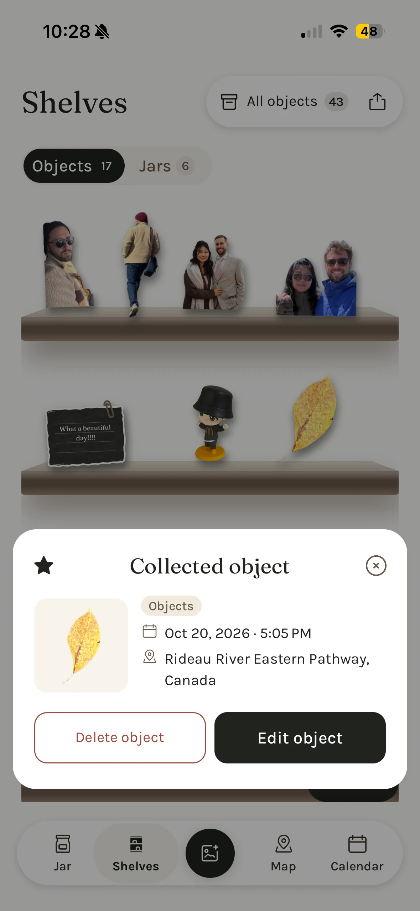
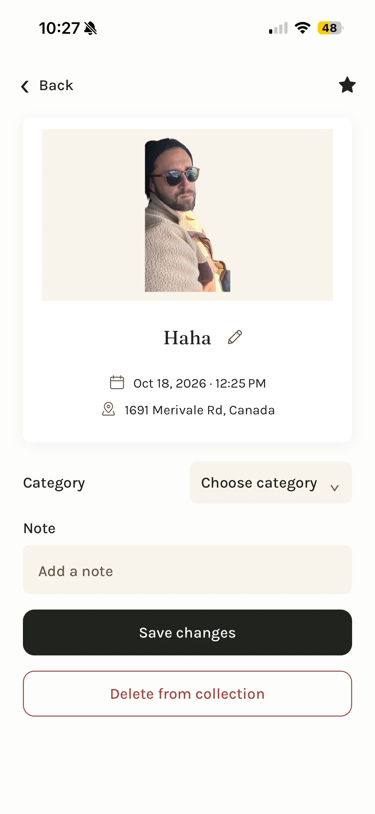
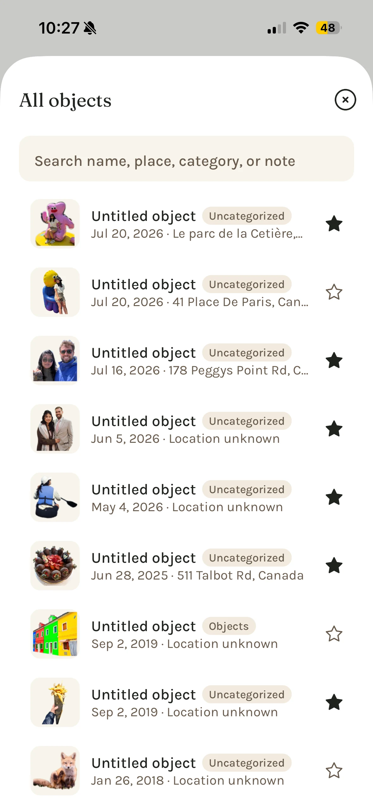
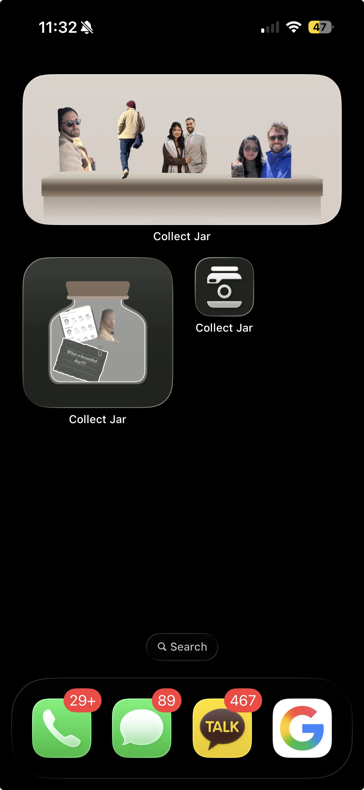

Define the product
Narrowed the concept from walking and map exploration to a personal collection app.
Product scope · Core loopI designed and built a mobile app that turns everyday photos into objects in a jar you can tilt, shake, and explore.
A flower on a walk. An object at home. A detail from a trip. I wanted to give these small finds a place beyond the camera roll.
Collect Jar is for people who enjoy noticing things and keeping personal collections. The design goal was simple: make capture easy, then make returning to the collection enjoyable.

This began as a personal product hypothesis. User research and retention results have not yet been established.
I owned product design and implementation, moving between the product brief, interaction decisions, and the implemented app.
Narrowed the concept from walking and map exploration to a personal collection app.
Product scope · Core loopDesigned capture, optional object details, jar interactions, and ways to return to saved objects.
User flows · Interaction designConnected photo capture, local storage, collection views, and physics in a mobile app.
React Native · Expo · Matter.jsI removed walking routes from the core scope and focused on the capture and jar experience.
People can collect at home or on a trip without starting a walking session.
Name, category, and note are optional. The same editing fields support adding context after capture.
A person can save what caught their eye without finishing a form.
A place can come from the current location, a selected photo, or a manual entry. Saving a find does not require a location.
A place can enrich a memory without continuous tracking.
The jar is the heart of the experience. Tilt the phone and the collection shifts with gravity. Shake it to tumble the objects. Drag one, then flick it back into the jar.
The app uses a physics scene for the jar. These controls show the gestures that shape the interaction.
The collection settles at the bottom of the jar.
Interaction demonstration for this case study. The app uses Matter.js for jar physics.

Take a photo or choose one from the library. Subject cutouts on supported iPhones turn photos into objects that move with touch and phone motion.

Object shelves give each find room to be seen. Open a preview to revisit its date and saved place.

Category jars group related finds so a growing collection stays easy to browse.

A preview keeps the collection in view while showing the details of one find.

Edit the name, date, place, category, or note when there is more to remember.

Search and a list view offer another way back when the collection becomes larger.

Browse capture days to return to the small discoveries from a particular date.

Explore finds with saved locations. Place previews bring nearby memories together.

Personal messages, Water Mode, and iOS widgets bring the collection into everyday use.
Current app screenshots. Feature availability depends on the device and plan.
The app connects photo capture, editable details, a tactile jar, object shelves, category jars, and search without requiring an account.
There are no measured adoption or retention results yet. I would use these questions to evaluate the core experience before expanding the scope.
Free core. The core collection experience is free. Manual iCloud backup and restore remain free on supported iPhones.
Plus. Paid options offer more capacity and customization, including manual cutouts, Water Mode, extra jar colors, and Shelves widgets.
App Store review. Version 1.0 has been submitted and is under Apple App Store review. User research and retention results are not yet available.
Building the app made the product decisions concrete. A tactile jar can make collecting enjoyable, but the experience still depends on quick capture, optional details, and simple ways to find an object again.
The biggest decision was narrowing the scope. Keeping the collection at the center gave me a clearer way to evaluate each feature and decide what could wait.
The jar gives the collection character.
The everyday flow gives it a purpose.